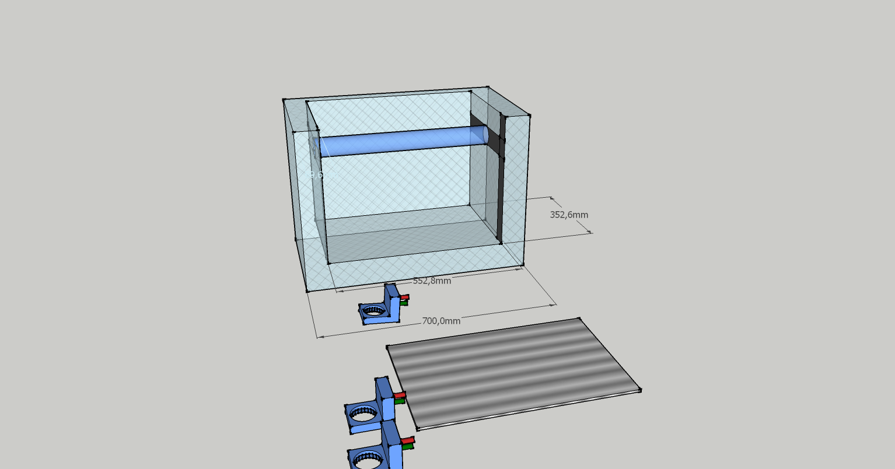

Gísli
Gísli
Selfreproducing
machine
This machine will work on the 3 axes sled system,the only thing is that
you have to put it together by your self the machine can not do it.
It works so: Theres a special unit that you put on the axes movement
for example raster tooth,vinil blade,3d plastic squirter.
I havent got time to think about the circuit boards and programming and
steel compoments.
